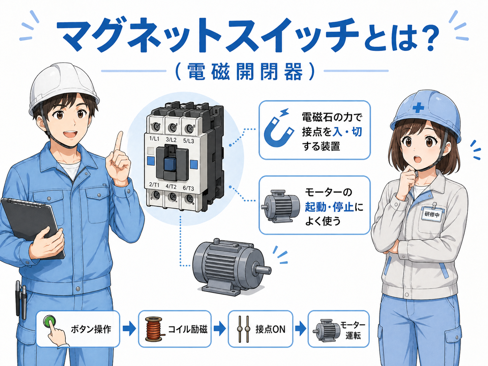

先に結論：マグネットスイッチは「大きな電気を入切する役」
マグネットスイッチは、制御盤の中でモーターなどの負荷へ行く主回路を入切する部品です。 現場では「マグネット」「電磁開閉器」「電磁接触器」と呼ばれることもあります。
イメージとしては、押しボタンやPLC出力が「動け」という指示を出し、 その指示を受けてマグネットスイッチが主回路をつなぎ、モーターへ電気を流します。

ボタンやPLCが直接モーターを動かすというより、間にマグネットスイッチを入れて主回路を開閉するイメージだよ。

つまり、PLCの出力は指示役で、マグネットスイッチが実際に電気を通す役なんですね。
そう。その役割分担が分かると、自己保持回路やモーター制御もかなり追いやすくなるよ。
マグネットスイッチとは？
マグネットスイッチは、電磁石の力を使って接点を動かす部品です。 コイルに電気が入ると内部の可動部が引き込まれ、主接点や補助接点が切り替わります。
名前に「スイッチ」と入っていますが、手で押す普通のスイッチとは少し違います。 コイルに電気が入ると自動で動くスイッチと考えると分かりやすいです。

現場でよく出る言い方
「マグネット」「電磁接触器」「電磁開閉器」など、呼び方が少し違うことがあります。 細かい違いはありますが、まずはモーターを動かす主回路を入切する部品として押さえておけば十分です。
基本の動き：どうやってモーターを動かすのか
流れを簡単にすると、操作回路がコイルを動かし、コイルが接点を切り替え、主回路がつながるという順番です。

- 押しボタンやPLC出力がONになる：まずは操作側の信号が出ます。
- コイルに電気が入る：マグネット内部の電磁石が働きます。
- 主接点が閉じる：モーターへ行く主回路がつながります。
- 補助接点も切り替わる：自己保持や状態確認に使えます。
- 信号が切れると元に戻る：コイルがOFFになれば接点も元へ戻ります。
主回路と操作回路を分けて見るのが大事なんですね。今まで全部ひとつに見えていました。
そこが一番大事。小さい信号で大きい電気を扱いやすくするのが、マグネットスイッチの良さだよ。
コイル・主接点・補助接点の違い
マグネットスイッチを理解するうえで、まず分けて見たいのがこの3つです。 ここを整理すると、図面やラダーがかなり読みやすくなります。

| 部品 | 役割 | よく使う場面 |
|---|---|---|
| コイル | 電気が入ると電磁石になり、内部を動かす | 押しボタン、PLC出力、タイマ接点などからON/OFFされる |
| 主接点 | モーターなど主回路の電気を入切する | 三相モーター、ポンプ、ファン、搬送機器など |
| 補助接点 | 制御用の補助信号として使う | 自己保持、動作表示、インターロック、PLC入力への取り込み |
ここで混同しやすいポイント
主接点と補助接点は、同時に動いても使い道が違います。 主接点は負荷へ行く電気、補助接点は制御や確認用、と分けて見ると混乱しにくいです。
PLCとの関係：PLCは「指示役」、マグネットは「実行役」
PLCが直接モーターを動かすのではなく、PLC出力でマグネットスイッチのコイルをONにし、 その結果として主接点が閉じてモーターが回る、という流れが基本です。
そのため、ラダーで出てくる出力Yや内部リレーを見たら、その先にどのコイルがあり、そのコイルで何の主回路をつないでいるのかを見る癖をつけると理解しやすいです。
操作回路で見ること
押しボタン、センサ、PLC出力、補助接点など、コイルを動かす側の流れです。
主回路で見ること
主接点の先に何の負荷があるか。モーター、ポンプ、ファンなどを確認します。
自己保持との関係
補助接点を使って、ボタンを離してもコイルが入り続ける回路を作れます。
異常停止との関係
停止信号や保護接点が開くとコイルが切れ、主接点も開いて負荷が止まります。
ラダーだけ見て終わりにしないで、その出力がどのコイルにつながっているかまで見られると、現場で強いよ。
PLCの画面だけじゃなくて、盤内の部品と結びつけて見るのが大事なんですね。
現場で見る注意点
マグネットスイッチは基本部品ですが、現場では「つながっているけど動かない」「コイルは入っているのに負荷が回らない」など、切り分けが必要になることがあります。
- コイル電圧を確認する：AC100Vなのか、AC200Vなのか、DC24Vなのかをまず確認します。
- 主接点の先の電圧を見る：コイルが入っていても、主接点やその先に問題があることがあります。
- 補助接点の使い方を見る：自己保持やインターロックが切れていると、思ったように動きません。
- 過負荷保護との組み合わせを見る：熱動継電器などの保護が働いていないかも確認します。
- 音や動きも手がかりになる：「カチッ」と入るか、チャタリングしていないかもヒントになります。
現場でありがちな見落とし
コイルが入っているかだけ見て終わると、主接点側の不具合を見落としやすいです。 逆に、主回路ばかり見ていると、補助接点や自己保持の切れで止まっている原因を外しやすくなります。
まとめ
マグネットスイッチは、小さい指示で大きめの電気を入切するための基本部品です。 コイル・主接点・補助接点の役割を分けて考えると、自己保持回路やモーター制御の理解がかなり進みます。
- コイル：動くきっかけを作る
- 主接点：モーターなど主回路を入切する
- 補助接点：自己保持や状態確認に使う
- PLCや押しボタンは指示役、マグネットは実行役と考える